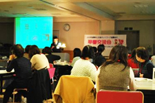
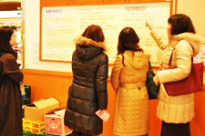

| １． |
挨拶 |
|
| 滝澤会長の歓迎の挨拶の後、JA女性協鈴木副会長よりご挨拶をいただきました。
|
| ２． |
ミニ学習会 「ＣＯ2削減の取組み」 |
| 講師： |
今野 嘉久氏 |
| （さいたまコープ参加とネットワーク推進室） |
|

- 使用電力の削減、ＣＯ2排出権取引によるＣＯ2排出
ゼロ店舗について。
- 蛍光灯の使用本数の削減、店舗天井高を従来店舗より
低くすることによる冷暖房効率の向上等、地道に削減。
- 店舗から出る廃食油からバイオディーゼル燃料 (BDF)
を生産、配達用車両に利用。
- 食物残渣は堆肥化しエコペレットを生産、利用して生
産された米をエコ循環米として販売。
- エコライフデー、電気ダイエット、環境の学習の取り
組みなど
|
|  |
３． |
店舗見学 |
| 店内図・見学ポイント紹介をもとに各自で見学。 |
| ４． |
昼食(さいたまコープ南浦和店のお弁当) |
 コープアガーで作ったグレープフルーツゼリーの試食 コープアガーで作ったグレープフルーツゼリーの試食
 みのりぶた～飼料米で育てた産直豚の試食 みのりぶた～飼料米で育てた産直豚の試食 |
| ５． |
午後は６グループに分かれて交流しました。 |
|